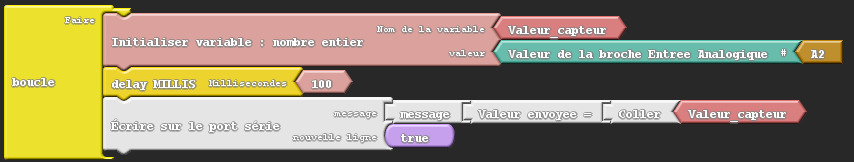
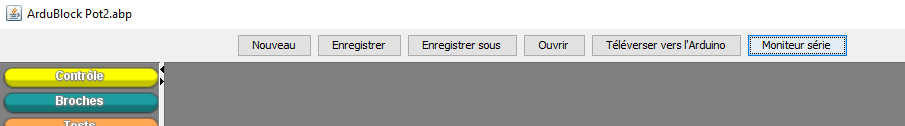
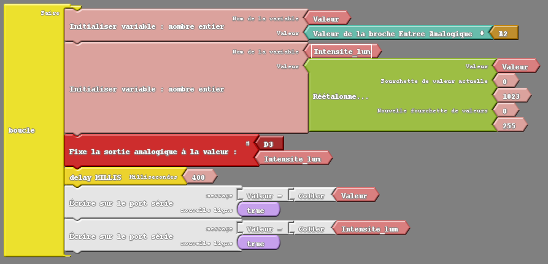

ACTIVITĒ 5
Exercices sur l'utilisation du Potentiomètre
Exercice 5A
Objectif
Faire tourner le potentiomètre et afficher la valeur envoyée par le potentiomètre.
Réaliser le programme ArduBlock ci-dessous :

Enregistrer le programme ArduBlock sous le nom de fichier Exercice5A_votrenomdegroupe.
Cliquer sur le bouton transférer et vérifier qu'il fonctionne correctement.
Pour visualiser les valeurs il faut ouvrir le moniteur série.
Cliquer sur l'icône en haut à droite, voir ci-dessous.

Questions à répondre sur copie pour l'Exercice 5A.
Q16) En regardant le programme en C généré, identifier les instructions en langage C :
- pour lire la valeur envoyée par le potentiomètre,
- pour afficher cette valeur sur le moniteur série.
Q17) Expliquer le rôle et le paramétrage des instructions suivantes :
a) analogRead()
b) Serial.begin()
c) Serial.print()
d) Serial.println()
Pour comprendre ces instructions et les commenter, vous pouvez consulter le guide de référence du langage Arduino.
Q18) Relever les valeurs minimale et maximale correspondantes aux positions extrêmes du potentiomètre.
Q19) Combien de valeurs numériques différentes sont envoyées par le potentiomètre ?
Q20) La conversion analogique numérique s'effectue sur combien de bits ? Justifier votre réponse.
Exercice 5B
Objectif
Modifier le programme ArduBlock 5A de telle façon que l'on puisse régler l'intensité d'éclairement de la LED rouge en fonction de la position angulaire du potentiomètre.
Réaliser le programme ArduBlock ci-dessous :

Consignes sur la modification du programme Ardublock
Le bloc « Réétalonne de [0 à 1023] en [0 à 255] » situé dans le menu « Opérateurs mathématiques », permet de convertir proportionnellement les valeurs reçues par le capteur de 0 à 1023, en valeurs acceptables pour régler le niveau d'éclairement de la LED de 0 à 255.
Enregistrer le programme ArduBlock sous le nom de fichier Exercice5B_votrenomdegroupe.
Cliquer sur le bouton transférer et vérifier qu'il fonctionne correctement.
Questions à répondre sur copie pour l'Exercice 5B.
Q21) En regardant le programme en C généré, identifier l'instruction en langage C correspondante au ré-étalonnage de la valeur.
Q22) Expliquer le rôle et le paramétrage de l'instruction suivante :
- map()
Pour comprendre cette instruction et la commenter, vous pouvez consulter le guide de référence du langage Arduino.
Q23) Donner la relation permettant d'effectuer la conversion proportionnelle entre le potentiomètre et la LED.
Exercice 5C
Objectif
Modifier le programme ArduBlock 5B de telle façon que l'on puisse régler le déplacement angulaire du servomoteur en fonction de la position angulaire du potentiomètre.
On garde la variation de l'intensité de la LED rouge en relation avec le potentiomètre.
On affichera en plus sur le moniteur série les valeurs de l'angle du servomoteur correspondant aux valeurs du potentiomètre.
Consignes sur la modification du programme ArduBlock
Les valeurs de l'angle du servomoteur varient entre 0 et 180°. Il faudra par conséquent, ré-étalonner les valeurs reçues par le capteur entre 0 et 1023, afin de convertir proportionnellement en valeurs acceptables pour le servomoteur de 0 à 180.
Il faudra donc utiliser le bloc « Réétalonne … », et saisir les bonnes fourchettes de valeurs.
Attention : ne pas utiliser le bloc « Réétalonne de [0 à 1023] en [0 à 255] » qui lui ressemble et pour lequel les valeurs de conversion ne peuvent pas être changées.
Enregistrer le programme ArduBlock sous le nom de fichier Exercice5C_votrenomdegroupe.
Vérifier qu'il fonctionne correctement.
Questions à répondre sur copie pour l'Exercice 5C.
Q24) Donner la relation permettant d'effectuer la conversion proportionnelle entre le potentiomètre et le servomoteur.
Exercice 5D
Objectif
Modifier le programme ArduBlock 5C de telle façon que les positons angulaires du servomoteur soient complétées par l'éclairage progressif des 3 LEDs tel que décrit dans les consignes.
Garder l'affichage sur le moniteur série des différentes valeurs, du potentiomètre, de l'intensité des LEDs et de la position angulaire du servomoteur afin de mettre au point votre programme
Consignes sur la modification du programme ArduBlock
Faire varier progressivement l'intensité des LEDs verte, jaune et rouge en fonction de la position angulaire du servomoteur.
Lorsque le servomoteur est à l'angle 0°, seule la LED verte est éclairée avec l'intensité maximale.
Lorsque le servomoteur est à l'angle 90°, seule la LED jaune est éclairée avec l'intensité maximale.
Lorsque le servomoteur est à l'angle 180°, seule la LED rouge est éclairée avec l'intensité maximale.
Dans les positions intermédiaires :
Lorsque l'angle du servomoteur est supérieur à 0° et inférieur à 90° les LEDs verte et jaune sont éclairées avec une intensité proportionnelle à l'angle. Par exemple plus on est proche de 0° et plus la LED verte sera lumineuse alors que la LED jaune sera peu lumineuse.
Inversement lorsque l'angle sera proche de 90° la LED jaune sera très lumineuse et la LED verte très peu lumineuse. Lorsque l'angle est à 45°, les LEDs verte et jaune ont la même luminosité correspondant à la moitié de l'intensité lumineuse.
Pour les angles compris entre 90° et 180°, on retrouvera le même principe d"éclairage progressif mais avec les LEDs jaune et rouge.
Enregistrer le programme ArduBlock sous le nom de fichier Exercice5D_votrenomdegroupe.
Vérifier qu'il fonctionne correctement.
Fin de l'activité 5 sur l'utilisation du potentiomètre, vous avez terminé les activités sur ArduBlock.
Prévenez le professeur pour qu'il récupère l'ensemble de vos fichiers de programme Ardublock et votre copie contenant les réponses aux questions.
Créé avec HelpNDoc Personal Edition: Produire des livres EPub gratuitement